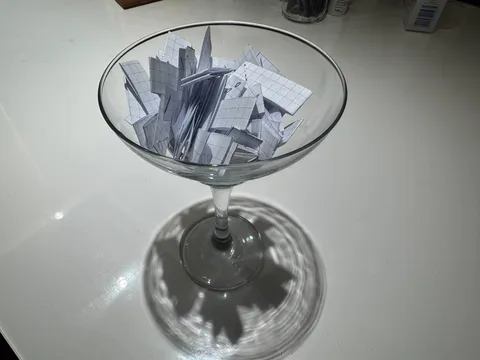
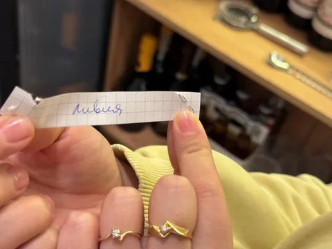
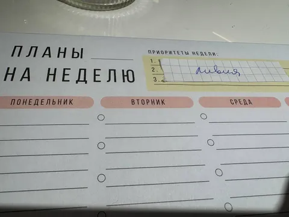
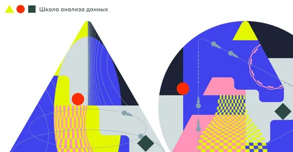
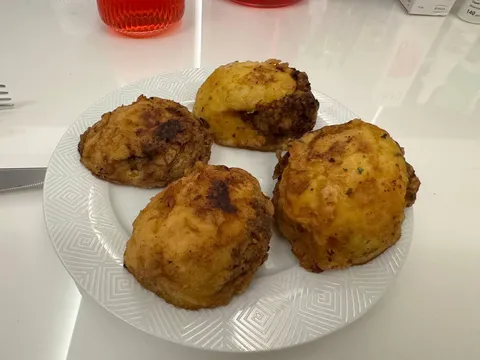

Жена нашла креативное решение вечной проблемы "что бы приготовить?". 2026 год в моей квартире объявлен годом познания кухонь мира. Для этого были изготовлены фанты с ~60 странами (нагенерили из головы, что первое вспомнилось), и теперь каждая неделя знаменуется познанием местных специалитетов.
В рамках поддержки инициативы, мы с сыном, в свою очередь, ищем соответствующую страну на глобусе и читаем про нее статью в википедии. На этой - пилотной - неделе выпала Ливия. Ее удалось обнаружить между Алжиром и Египтом, а известна она тем, что благодаря большим запасам нефти, Ливия является едва ли не самой богатой страной Африки.
Гастрономическая культура Ливии характеризуется обширным использованием круп и бобовых (кускус, булгур, фасоль, нут), мяса (ягнятина, говядина) и специй (кумин, паприка, томатная паста). А первыми экспериментами на нашей кухне стали мбатан (запеченый картофель, фаршированный бараньим фаршем с луком и специями) и шарба (суп, напоминающий харчо). Получилось вкусно и познавательно. Блюда получаются в меру пряные, сытные и необычные. Также, по прогнозам, на этой неделе ожидаются шакшука, базин и таджин махши (кто бы это ни был).
А помогать в нашей новой забаве нам будут, конечно же, Лавка и Еда. Думаю, ассортимента там хватит на все 60 запланированных стран со всеми их особенностями, традициями и гастрономическими девиациями. Хотя, неровен час, придется и на фудсити съездить (это такой мега-рынок продуктов, где можно найти хоть чёрта маринованного в собственном соку).
Если у вас есть интерес к такой рубрике в моей колонке, поддержите лайком. И будем в новом году изучать гастро-глобус вместе, а там, глядишь, начну аутсорсить тексты силами жены)
